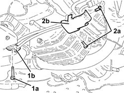
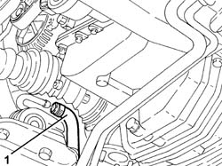
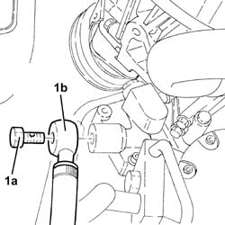
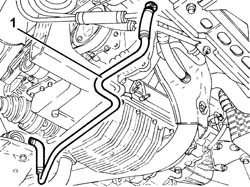
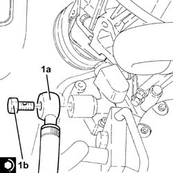

4130B38 power steering pump inlet pipe from fluid resevior pipe or intermediate rigid pipe r r
- Path
- Procedures > 41 STEERING > 4130 POWER ASSISTED STEERING > 4130B power steering hydraulic sytem > 4130B38 power steering pump inlet pipe from fluid resevior pipe or intermediate rigid pipe r r
- Kind
- repair procedure (removal / refitting; the operation number is the code)
- Applies to
- engines: 2.5 V6, 3.2 V6; all production periods
- Interactive page
- https://sloeber94.github.io/elrnDB-a156/en/#/3238139
Applies to: engines: 2.5 V6, 3.2 V6; all production periods
 Removing
Removing
 Refitting
RefittingPosition the vehicle on the ramp.
Drain the power steering fluid from the reservoir using a suitable syringe.
Proceed with the removal 4450B10 Front WHEEL (one) - R.R. (Right side).
Proceed with the removal 7055B64 Engine compartment DUST shield in front wheel arch (one), left or right - R.R. (Right side).
Proceed with removal 7055B54 under-engine guard - r r .
1. Undo the bolt (1a) and remove the plate (1b) securing the power steering pipes.
2. Undo bolts (2a) and remove power steering pipe mount (2b).

Applies to: engines: 2.5 V6, 3.2 V6; all production periods
1. Working from the wheelarch, disconnect the rubber supply hose from fluid reservoir to power steering rigid pipe, power steering pump inlet pipe side.

Applies to: engines: 2.5 V6, 3.2 V6; all production periods
1. Undo connector (1a) and disconnect the rubber delivery hose from the rigid pipe to the power steering pump inlet from the fluid reservoir (1b), power steering pump side.

Applies to: engines: 2.5 V6, 3.2 V6; all production periods
1. Withdraw the rubber delivery hose from the rigid pipe to the power steering pump inlet from the fluid reservoir and remove.

Applies to: engines: 2.5 V6, 3.2 V6; all production periods
Refitting
RemovingRefit the rubber delivery hose from the rigid pipe to the power steering pump inlet from the fluid reservoir.
1. Connect the rubber delivery hose from the rigid pipe to the power steering pump inlet from fluid reservoir (1a), power steering pump side and tighten connector (1b) to the specified torque.
 | Fastening | Component | Ø | Value (daNm) |
|---|---|---|---|---|
1b | - | - | - | - |

Applies to: engines: 2.5 V6, 3.2 V6; all production periods
Connect the rubber supply hose from fluid reservoir to power steering rigid inlet pipe, power steering pump inlet pipe side, and tighten the band.
Refit the power steering pipe mounting in its seating and secure it using bolts.
Refit the plate securing the power steering pipe and secure with the bolt.
Proceed with refitting 7055B54 under-engine guard - r r .
Proceed with the refitting 7055B64 Engine compartment DUST shield in front wheel arch (one), left or right - R.R. (Right side).
Proceed with the refitting 4450B10 Front WHEEL (one) - R.R. (Right side).
Top up the power assisted circuit with the recommended fluid.
 | Type | Component | Name | Qty. |
|---|---|---|---|---|
- | Fluid | POWER ASSISTED STEERING CIRCUIT | TUTELA GI/A | - |
Bleed the power steering system as described below
With the front wheels raised off the ground, with the engine switched off turn the steering wheel to full lock, left and right, 4-5 times.
Check and, if necessary, top up the fluid level in the reservoir.
Remove the car from the ramps.
Start the engine and turn the steering wheel to full lock, left and right, 4 - 5 times.
Top up the fluid level in the reservoir.